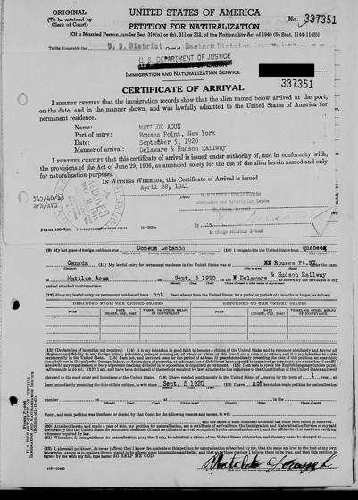
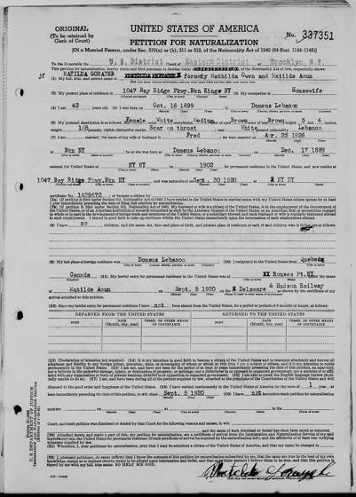
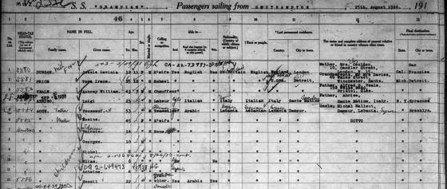
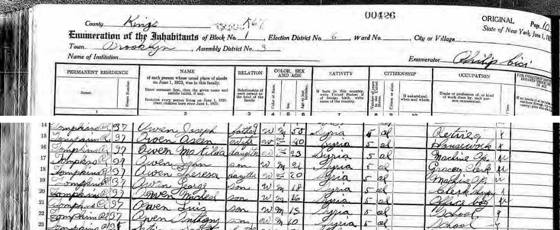
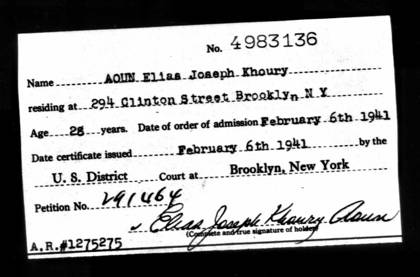
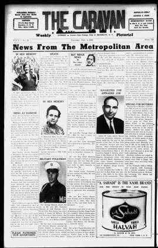

Probably the oldest daughter. She married Fred Gorayeb in 1926, had no children, and became a citizen in 1942.
- Born
- 16 October 1899, Damour Confirmed
- Married
- Fred Gorayeb, 25 April 1926 Confirmed
- Children
- None Confirmed
- Citizen
- 30 June 1942 Confirmed
- Died
- December 1984, Brooklyn, aged 85 (Social Security Death Index) Probable
- Parents
- Joseph (Youseuf) Aoun and Assin Aoun Confirmed
Spellings in the records: Matilde (1920 manifest), Matilda Gorayeb, Mathilda Owen (1942 petition).
Read the full story All the people
Documents about Mathilde (Matilda) Gorayeb

Document 35Mathilde's certificate of arrival, April 1941
Document 36Mathilde's petition for naturalization, 1942 Document 37Mathilde's witnesses and oath, 1942
Document 37Mathilde's witnesses and oath, 1942
Document 2The Grampian manifest, 1920 Document 75News from Beirut: the death of Anthony's sister Esther, before 29 January 1961
Document 75News from Beirut: the death of Anthony's sister Esther, before 29 January 1961 Document 109New York Times death notice for John J. Awn, 25 May 1977
Document 109New York Times death notice for John J. Awn, 25 May 1977 Document 133Joseph's death notice, September 1932
Document 133Joseph's death notice, September 1932 Document 134Assin's death notice, October 1935
Document 134Assin's death notice, October 1935 Document 137Anthony's death notice, 15 July 1966
Document 137Anthony's death notice, 15 July 1966
Document 1021925 New York State census: the Awn family, written OwenDocuments pageAl-Hoda, 28 July 1930, p.2: George's family notice (Anthony's brother)
Documents pageNaturalization index lines for Elias and Matilda
Documents pageEsther in Lebanon: what the records show together (Anthony's sister)Each fact carries its label: Confirmed (shown in a record), Family (told to us) or Probable (fits but unproven). Living relatives are not listed.